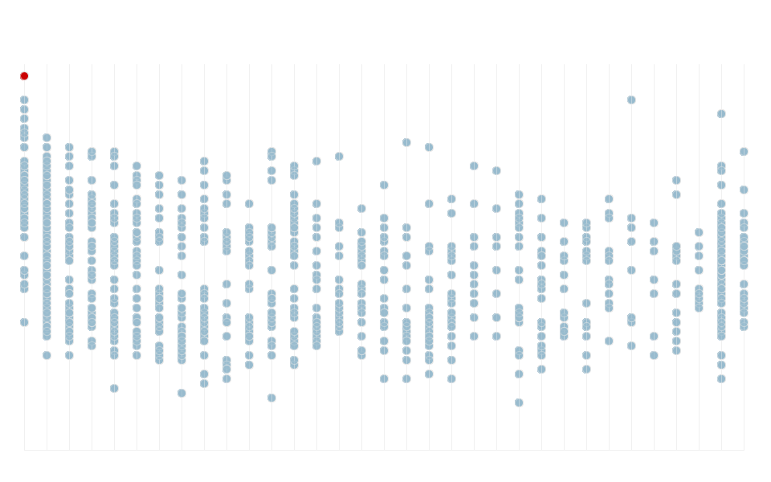

An earthquake of magnitude of 9.0 occurred March 11, 2011, off the Pacific coast of Japan. The Japan Sendai Earthquake was followed by a tsunami. Both claimed almost 20,000 lives in the region of Tohoku and triggered nuclear meltdowns at three reactors in Fukushima nuclear plant. This project is an exploration of data related to this event using CartoDB and Tableau.
Data source: Japan Sendai Earthquake Data Portal
A grid made of data from 495 Japanese cities with more than 1,000 residents
shows how the earthquake was felt through the islands. In blue is marked the area covered by the tsunami.

All aftershocks felt in Japan in the 30 days after the Great Tohoku Earthquake (in red).